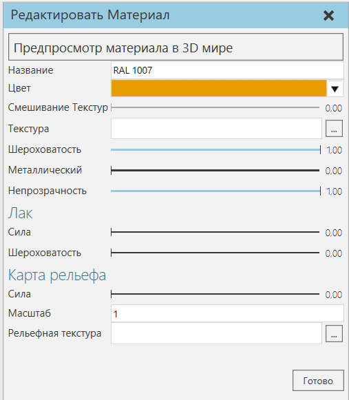

Свойства материала |
|
Материал имеет следующий набор свойств. ·Предпросмотр материала в 3D мире - Включает/выключает предварительный просмотр материала в 3D мире. ·Наименование - Определяет имя материала. ·Цвет - Определяет цвет материала. ·Текстура и Смесь текстур - Определяет текстуру материала. ·Шероховатость - Определяет, насколько гладким/грубым выглядит материал при нанесении на поверхность. ·Металлический - Определяет металлический блеск материала. ·Непрозрачность - Определяет непрозрачность материала. ·Лак - Набор свойств для визуализации прозрачного слоя краски или лака, тем самым влияющих на блеск и гладкость материала. ·Карта рельефа - Набор свойств для визуализации неровностей или возвышений на материале.
 |